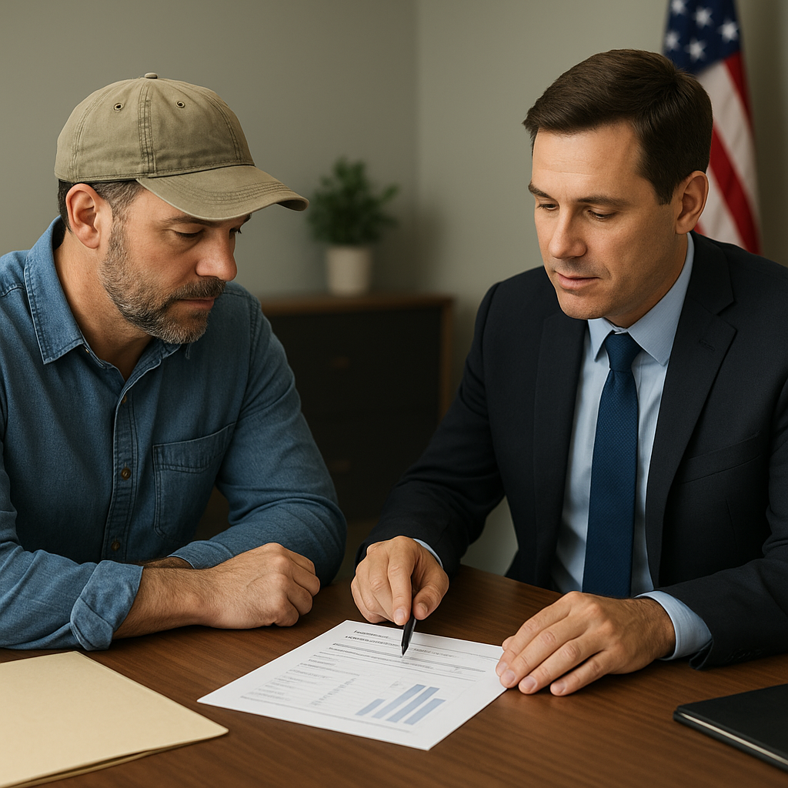

Dallas County saw active foreclosure filings rise 24% year-over-year in 2026, with more than 4,755 properties in some stage of foreclosure as of late summer. For Texas veterans who own a home with a VA-backed loan and are struggling to make payments, the federal government launched a new and powerful tool in June 2026: the VA Partial Claim Program.
I'm Bond Peter Njoku (NMLS #2670329), a licensed Mortgage Loan Officer based in Garland, TX. I work with Texas veterans on VA loan purchases, refinances, and now — loan retention when hardship hits. The Partial Claim Program is something every VA borrower in Texas should know exists, even if they're not struggling right now. Here's a plain-language breakdown of how it works.
What is the VA Partial Claim Program and when did it launch?
The VA Partial Claim Program opened for submissions on June 15, 2026. It's a foreclosure-prevention tool that allows a veteran's loan servicer to advance funds to cover the homeowner's missed mortgage payments — and then attach those advanced funds as a separate subordinate lien on the property.
The key features that make this program different from alternatives:
- Zero interest: The subordinate lien carries no interest rate. The amount owed doesn't grow.
- No monthly payment: You make no monthly payment on the subordinate lien. Your primary mortgage payment stays exactly what it was before the hardship.
- Deferred repayment: The balance is repaid only when you sell the home, refinance the primary loan, or pay off the first mortgage in full.
- No foreclosure while eligible: Veterans who are being evaluated for the program or are in the 3-month trial phase are protected from foreclosure proceedings during that period.
How does the VA Partial Claim compare to other VA loss-mitigation options?
| Option | Missed Payments Handled | Effect on Monthly Payment | Interest on Missed Amount | Best For |
|---|---|---|---|---|
| VA Partial Claim (new) | Rolled into zero-interest subordinate lien | Unchanged | None | Borrowers who can sustain current payment after hardship |
| Loan modification | Added to principal, re-amortized | Usually increases (new rate, new term) | Yes (market rate) | Borrowers needing a lower payment long-term |
| Repayment plan | Paid back over 3–12 months | Temporarily increases | None | Short-term hardship, quick recovery |
| Forbearance | Paused, added to end of loan or repayment plan | Unchanged during pause; balloon after | Depends on agreement | Short-term income disruption (job loss, medical) |
| VA IRRRL refinance | Not applicable | Can lower if current rate is higher | N/A | Veterans who are current and want a lower rate |
The partial claim fills a gap that existed before June 2026: if you needed a permanent solution that didn't raise your monthly payment, the main option was a loan modification — which almost always increases the payment. Now there's a third path.
Step-by-step: how the VA Partial Claim process works
- Contact your servicer. The servicer (the company you make your VA mortgage payments to) identifies you as a borrower in default or approaching default. They initiate the loss-mitigation evaluation.
- Document the hardship. You'll provide documentation of the financial hardship — job loss, medical bills, divorce, income reduction. The servicer reviews your ability to resume payments going forward.
- Three-month trial payment plan. If approved, you enter a 3-month trial period where you make the current monthly payment (not the missed amounts) to demonstrate you can sustain it.
- Partial claim submitted. After the successful trial, the servicer submits the partial claim to the VA. The VA advances the missed payment funds, and the subordinate lien is recorded.
- Resume normal payments. Your primary mortgage continues at the original rate, term, and monthly payment as if the hardship never happened — except the subordinate lien now exists in the background.
Important: servicers have until November 28, 2026 to fully implement this
Here's a critical detail that affects Texas veterans right now: while the VA began accepting partial claim submissions on June 15, 2026, servicers have until November 28, 2026 to fully implement the program into their systems. That means if you contact your servicer today and they say they're not yet processing partial claims, they are technically still within their implementation window.
What to do if your servicer says the program isn't available:
- Document the conversation — date, representative name, what was said.
- Ask for the servicer's current loss-mitigation options in writing.
- Contact the VA's Loan Guaranty customer service line: 1-800-827-1000.
- Contact HUD's housing counseling hotline: 1-800-569-4287 (free).
- Call or text me at 469-545-7180 — I can help you escalate and connect with VA-approved housing counselors in Texas.
Named scenario: Garland veteran, 3 missed payments, back on track
I recently worked alongside a Garland veteran — let's call the household composite situation this: two-income household, one spouse took an unpaid medical leave for 4 months, resulting in 3 missed mortgage payments on their 2021 VA loan. The primary balance was $287,000 at 3.1%, with a monthly payment of $1,226 P&I. Total missed payments: approximately $3,700.
Under a traditional modification, those $3,700 in missed payments would have been added to the principal at a new rate — raising the monthly payment by roughly $25–$40/month for the remaining term. Under the partial claim, the $3,700 became a zero-interest subordinate lien with no monthly payment. The primary loan resumed at $1,226/month, unchanged. The $3,700 would only come due when the home is eventually sold or refinanced — at which point the property will have appreciated enough that it's a rounding error in the transaction.
What happened to VASP — and should veterans who were in that pipeline re-apply?
The VA Servicing Purchase program (VASP) was the prior foreclosure-prevention mechanism that allowed the VA to purchase certain defaulted loans, modify them, and create new loans at reduced rates. VASP was wound down in 2026 as the Partial Claim Program was prepared to replace it. If you were evaluated for VASP and remained in limbo, or if your VASP application was declined, contact your servicer now — you may qualify for the partial claim under different criteria.
Frequently Asked Questions
What is the VA Partial Claim Program and when did it start?
I'm Bond Peter Njoku (NMLS #2670329) and the VA Partial Claim Program opened for submissions on June 15, 2026. It's a foreclosure-prevention tool that converts missed mortgage payments into a zero-interest subordinate lien with no monthly payment required. The balance is only repaid when you sell, refinance, or pay off the primary loan. Servicers have until November 28, 2026 to fully implement it. If you're a Texas veteran behind on payments, call or text me at 469-545-7180.
How is the VA Partial Claim different from a loan modification?
I'm Bond Peter Njoku (NMLS #2670329) and the key difference is your monthly payment. A traditional loan modification usually adds missed payments back into your principal at a new rate, which almost always raises your monthly obligation. The VA Partial Claim is different: missed payments become a separate zero-interest subordinate lien with no monthly payment. Your primary loan continues at the original rate and term. For a Texas veteran who had temporary hardship but can sustain their current payment going forward, this is often far better than a modification. Call or text me at 469-545-7180.
Does my servicer have to offer the VA Partial Claim if I'm behind on my VA mortgage?
I'm Bond Peter Njoku (NMLS #2670329) and servicers are required to evaluate eligible veterans for the partial claim as part of the VA loss-mitigation process. However, servicers have until November 28, 2026 to fully implement the program, so some may not yet be processing applications. If your servicer says it's not available, escalate to VA at 1-800-827-1000 or contact HUD counseling at 1-800-569-4287. You can also call or text me at 469-545-7180 — I can help you navigate servicer roadblocks.
What happened to the VA Servicing Purchase (VASP) program?
I'm Bond Peter Njoku (NMLS #2670329) and VASP was wound down in 2026 as the new Partial Claim Program was launched. VASP allowed the VA to purchase defaulted loans and modify them. The Partial Claim is now the primary foreclosure-prevention tool. If you were evaluated for VASP and the process stalled, contact your servicer now — you may qualify for the partial claim under updated criteria. Call or text me at 469-545-7180 for guidance.
Texas veteran struggling with your VA mortgage payment?
I'm Bond Peter Njoku (NMLS #2670329). I help Texas veterans understand their VA loan options — whether that's buying a home, refinancing, or navigating hardship. If you're behind on payments, the VA Partial Claim Program may be the answer. Call or text me at 469-545-7180, message me on WhatsApp, or start your pre-approval online.